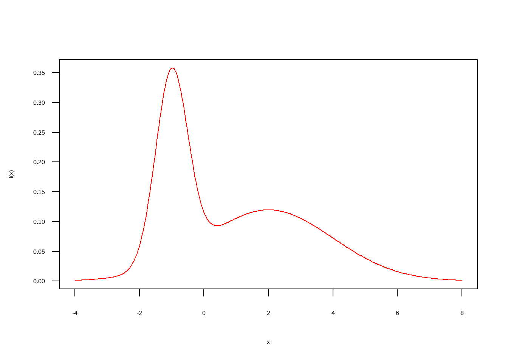
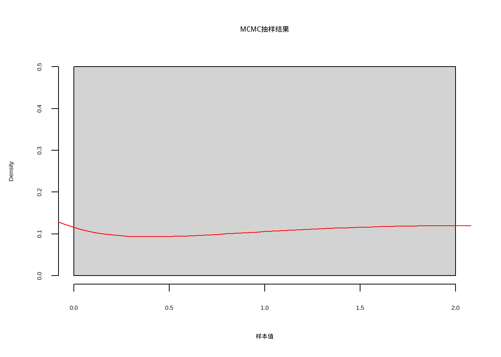

library(tidyverse)19 MCMC(学习中)
f <- function(x){
p <- 0.4
mu <- c(-1, 2)
sd <- c(.5, 2)
p * dnorm(x, mu[1], sd[1]) +
(1-p) * dnorm(x, mu[2], sd[2])
}
curve(f(x), col="red", -4, 8, n=301, las=1)
integrate(f, lower = -Inf, upper = Inf)1 with absolute error < 7.6e-06# 定义概率密度函数（指数分布）
pdf <- function(x, lambda) {
dexp(x, rate = lambda)
}
pdf<-function(x){
p <- 0.4
mu <- c(-1, 2)
sd <- c(.5, 2)
p * dnorm(x, mu[1], sd[1]) +
(1-p) * dnorm(x, mu[2], sd[2])
}
# 初始化MCMC参数
n_samples <- 10000 # 抽样次数
proposal_sd <- 0.1 # 提议分布标准差
current_sample <- runif(1) # 初始样本值在0到1之间
# 存储抽样结果
samples <- numeric(n_samples)
# 运行MCMC抽样
for (i in 1:n_samples) {
# 从提议分布中抽样一个候选样本
candidate_sample <- rnorm(1, mean = current_sample, sd = proposal_sd)
# 计算接受率
# acceptance_prob <- pdf(candidate_sample, lambda = 2) / pdf(current_sample, lambda = 2)
acceptance_prob <- pdf(candidate_sample) / pdf(current_sample)
# 决定是否接受候选样本
if (runif(1) < acceptance_prob) {
current_sample <- candidate_sample
}
# 存储样本
samples[i] <- current_sample
}
# 打印抽样结果或进行后续分析
hist(samples[20000:length(samples)], breaks = 100, main = "MCMC抽样结果", xlab = "样本值",freq = F)
curve(f(x), col="red", -4, 8, n=301, las=1,add = T)